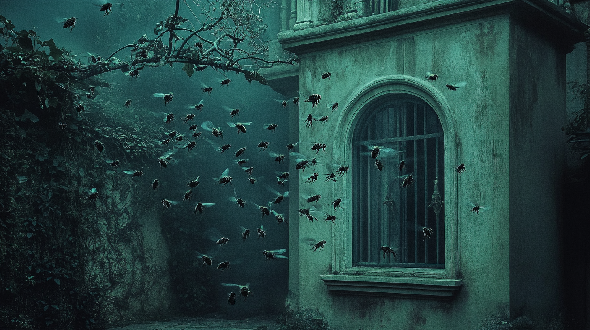
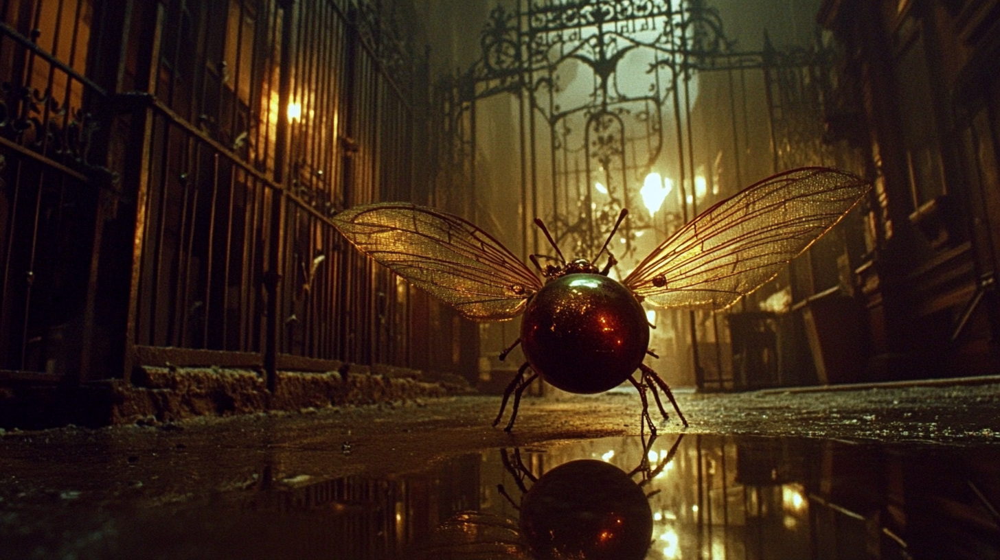
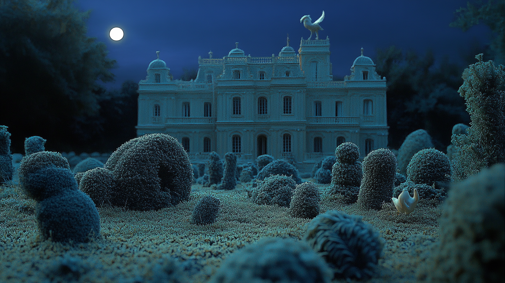
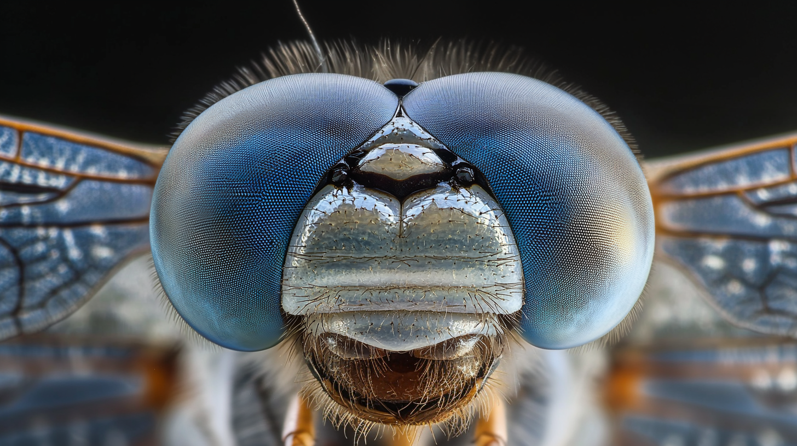
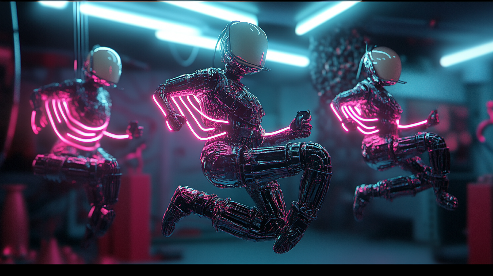

Good Eggs
February 7 Release
— The Speculator

Set in a not-too-distant future where humanity has transcended aging, labor, and mortality, Good Eggs centers on a group of "holdouts" who reject post-humanist integration. These mostly elderly residents inhabit decayed, waterlogged Victorian mansions surrounded by overgrown topiary gardens. Here, they cling to analog traditions and absurd rituals: flooding rooms for synchronized swimming, cheerleading aimlessly from their porches, clipping hedges only to glue the leaves back on, restoring ruined artworks just to let them decay again, playing antiquated string instruments, and preparing meals from scratch. Bees, dragonflies, and crows weave through their days, reflecting themes of resourcefulness, chance, and impermanence.
Their tactile, ephemeral existence contrasts sharply with a hyper-advanced society obsessed with virtuality, efficiency, and sterile perfection. Occasionally, drone-like machines breach the mansion's periphery, observing the residents with a mix of curiosity and detachment. In a pivotal moment, a mechanical insect delivers an egg—a fragile, enduring symbol of life—to a mechanically augmented man from the futuristic world. This surreal, wordless exchange bridges the two worlds, offering a profound meditation on mortality, memory, and resistance to progress.
Music serves as a recurring motif, with the holdouts performing soulful, archaic compositions while the futuristic beings use drones and holograms to create abstract, fluctuating performances. This juxtaposition underscores the tension between humanity's rooted traditions and its relentless pursuit of erasing them.
Through misty, dreamlike imagery, Good Eggs explores the bittersweet absurdity and quiet beauty of preserving old ways in a world determined to leave them behind.

Director's Statement
With Good Eggs, I set out to create a kaleidoscopic story about resistance in a world that has moved beyond mortality, labor, and decay. The film centers on a group of "holdouts" who reject post-humanist integration, clinging instead to tactile rituals and ephemeral experiences. Their lives are absurd, poignant, and defiant—a reflection of the tension between preserving old ways and a society obsessed with perfection and progress.
The film's visual language draws from both historical and futuristic references. The mechanical drones are designed with a Victorian steampunk aesthetic, featuring brass gears and clockwork mechanisms that echo the industrial revolution—a period that, like our own AI revolution, marked a crucial turning point in humanity's relationship with technology.
Through the use of AI-generated imagery, we're able to create a world that feels both historical and futuristic, grounded yet dreamlike. The mechanical drones are designed with a Victorian steampunk aesthetic, featuring brass gears and clockwork mechanisms that echo the industrial revolution—a period that, like our own AI revolution, marked a crucial turning point in humanity's relationship with technology.
The film's title, Good Eggs, carries multiple meanings. It references the literal eggs that appear throughout the narrative as symbols of potential and fragility. But it also speaks to the residents themselves—these "good eggs" who choose to remain human in all its messy, imperfect glory. Their resistance isn't just about rejecting technology; it's about preserving the beauty of impermanence in a world that has forgotten why things end.
Working with AI tools has allowed me to realize this vision in a way that would have been impossible otherwise. The technology enables the creation of imagery that exists in a liminal space between the real and the artificial, perfectly suited to a story about the boundaries between human and machine, preservation and progress.
Ultimately, Good Eggs is a meditation on what we choose to keep and what we allow to fade away. It's about finding beauty in decay, meaning in ritual, and resistance in the simple act of remaining unchanged. In a world racing toward a post-human future, sometimes the most radical act is simply staying human.